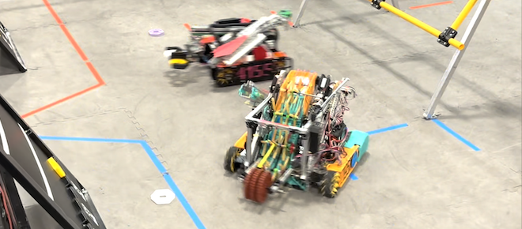

First Tech Challenge

Our FIRST Tech Challenge teams are run by 4-H parent volunteers and assisted by youth and adult mentors from FRC team 2718. These teams for 7th - 9th grades serve as a development environment for our high school team and students can also join the STEAM Volunteer Squad.
- FTC teams meet 4-8 hours each week in the fall semester into January.
- Competitions occur about once per month on a Saturday from late October to Jan/Feb.
- Meetings will be at the Science Museum Oklahoma robotics workshop, typically on Saturday, Sunday afternoon, or Monday evenings. This is at the discretion of the coach.
- It’s possible we could have an off-site team elsewhere in the county.
- Team members are expected to attend at least 75% of meetings unless arrangements are made with the team’s coach.
- Application does not guarantee placement on a team. We will only form as many teams as we have parents or other volunteers to help support them.
- Costs: 4-H fee ($25); team fee ($50, includes t-shirt); scholarships available – we will not turn away anyone due to inability to pay; parents are responsible for transportation to events.